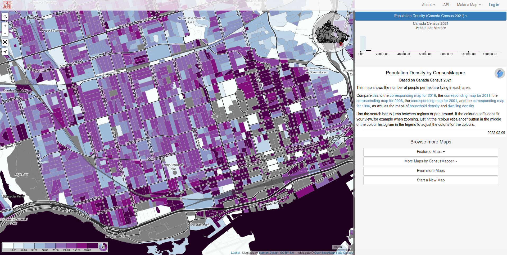

Introduction to Spatial Data


Jeff Allen --- January 16, 2023 --- for MUI2000
Spatial Data
attribute data (the what) + location data (the where)

Vector Data
Representing features as points, lines, or polygons
Vector data is encoded as a series of X,Y (e.g. longitude, latitude) coordinates

Source: Structure of GeoJSON data, a common open-source spatial data format.
Vector data of various built environment features along Bloor St from OpenStreetMap

e.g. GPS Data
- plethora of points, each with a date/time
- can aggregate to "trips" and "visits"
e.g. aggregated flow data
Raster Data
Represents space as a continuous grid, with each cell having a value

DEM of Toronto and Lake Ontario (Data from NOAA)
e.g. Satellite Imagery
Data Licenses & Use Agreements
Open Data
- e.g. City of Toronto Open Data
- e.g. Canadian Census
Restricted Data
- e.g. Historical Business Data (Data Axle)
- e.g. Environics Analytics Data
Canadian Census (Statistics Canada)
- many variables on demographics, socio-economic status, etc.
- summary data at different levels of geography
- check out CensusMapper to view and download data
Open Data Toronto
Data Axle
Historic Business Data (annually 2009 to 2021)

Geoprocessing
- converting from one data format to another
- combining two or more datasets to create new data